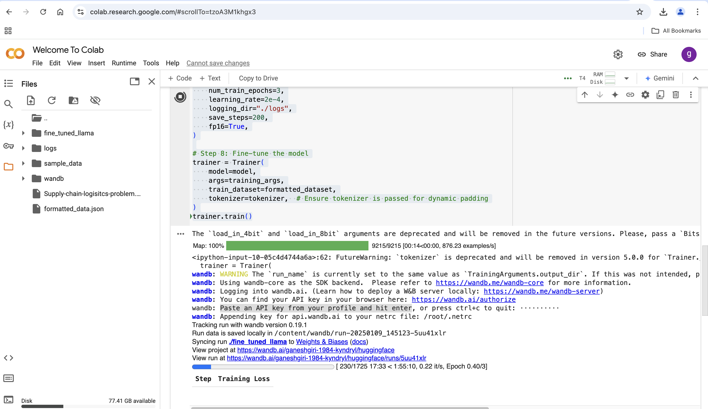
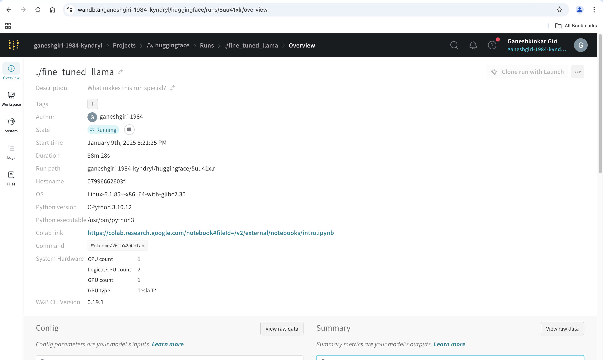
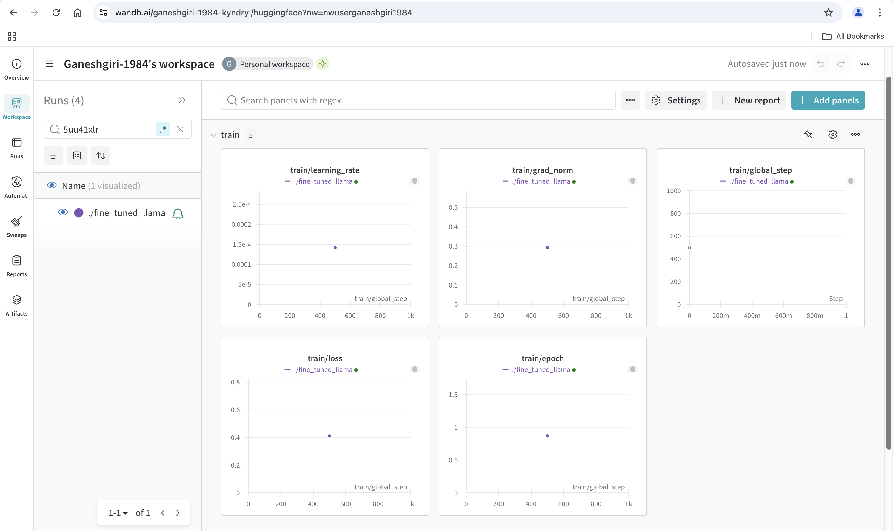
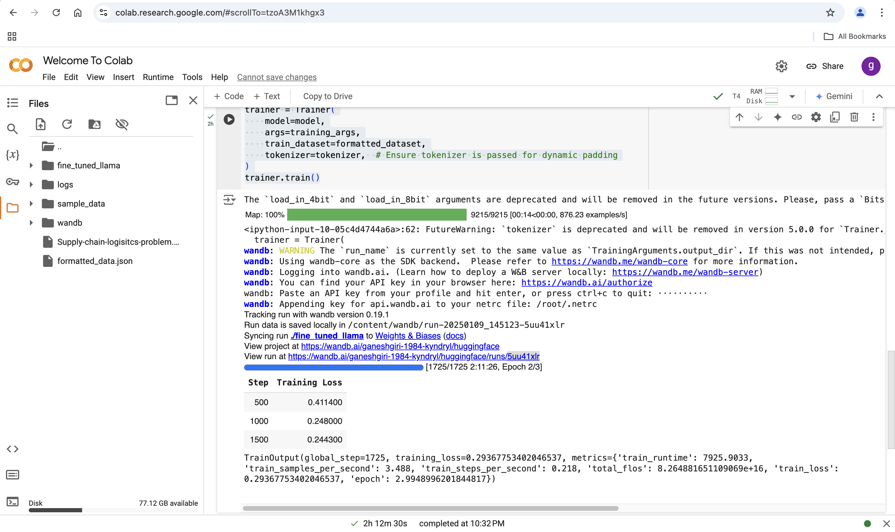

Fine-tuning a LLaMA model#
Fine-tuning a LLaMA model with a custom dataset involves several steps. Here’s a comprehensive guide tailored for your setup:
Prerequisites#
- System Requirements:
- Sufficient GPU memory for training. For LLaMA 3.2 models (70B), multiple GPUs with high VRAM (e.g., A100s) are recommended.
-
Ensure your Mac system is connected to a machine with suitable GPUs (or use cloud-based resources like AWS, GCP, or Azure).
-
Installed Software:
- Python environment (Anaconda installed).
- Required libraries: transformers, datasets, bitsandbytes, torch, peft (for LoRA-based fine-tuning), and others.
- Proper setup for LLaMA model files. Confirm the downloaded model path is correct.
Prepare Your Dataset#
-
Format: The dataset should ideally be in JSON or text format. Common formats include:
-
Supervised Fine-tuning: { "instruction": "What is X?", "response": "X is Y." }
- Unsupervised Fine-tuning: Plain text data (tokenized).
Loging huggingface#
from huggingface_hub import notebook_login
notebook_login()
Convert custom data to proper format data.#
import json
# Load the JSON data
with open("Supply-chain-logisitcs-problem.json", "r") as f:
data = json.load(f)
# Define the template for instruction-response
formatted_data = []
for record in data:
instruction = f"Provide details about Order ID {record['Order ID']}."
response = ", ".join([f"{key}: {value}" for key, value in record.items()])
formatted_data.append({"instruction": instruction, "response": response})
# Save the formatted data to a JSONL file
with open("formatted_data.json", "w") as f:
for entry in formatted_data:
f.write(json.dumps(entry) + "\n")
Logging into wandb.ai.#
- Learn how to deploy a W&B server locally: https://wandb.me/wandb-server
- You can find your API key in your browser here: https://wandb.ai/authorize
Start training the custom data#
import json
from datasets import Dataset, load_dataset
from peft import LoraConfig, get_peft_model
from transformers import AutoModelForCausalLM, AutoTokenizer, TrainingArguments, Trainer
# Step 1: Load dataset
dataset = load_dataset("json", data_files="formatted_data.json")["train"] # Access the 'train' split
# Step 3: Load base model and tokenizer
model_name = "meta-llama/Llama-3.2-1B" # Replace with your LLaMA model
model = AutoModelForCausalLM.from_pretrained(model_name, load_in_8bit=True, device_map="auto")
tokenizer = AutoTokenizer.from_pretrained(model_name)
# Ensure padding token is set
if tokenizer.pad_token is None:
if tokenizer.eos_token is None:
# If there's no eos_token, add a pad token manually
tokenizer.add_special_tokens({'pad_token': '[PAD]'})
else:
# If eos_token exists, use it as pad_token
tokenizer.pad_token = tokenizer.eos_token
# We also need to resize the embedding layer of the model to accommodate the new token.
model.resize_token_embeddings(len(tokenizer))
# Step 4: Preprocess the dataset for tokenization
def preprocess_data(example):
# Corrected the key to access the instruction text
inputs = tokenizer(example["instruction"], truncation=True, padding="max_length", max_length=512)
labels = tokenizer(example["response"], truncation=True, padding="max_length", max_length=512)
inputs["labels"] = labels["input_ids"]
return inputs
# Now we map the dataset, using the dataset loaded from the json file
formatted_dataset = dataset.map(preprocess_data)
# Step 6: Setup LoRA configuration
lora_config = LoraConfig(
task_type="CAUSAL_LM",
r=16,
lora_alpha=32,
target_modules=["q_proj", "v_proj"],
lora_dropout=0.1,
)
model = get_peft_model(model, lora_config)
# Step 7: Define training arguments
training_args = TrainingArguments(
output_dir="./fine_tuned_llama",
per_device_train_batch_size=1,
gradient_accumulation_steps=16,
num_train_epochs=3,
learning_rate=2e-4,
logging_dir="./logs",
save_steps=200,
fp16=True,
)
# Step 8: Fine-tune the model
trainer = Trainer(
model=model,
args=training_args,
train_dataset=formatted_dataset,
tokenizer=tokenizer, # Ensure tokenizer is passed for dynamic padding
)
trainer.train()




Download the folder#
import shutil
# Replace 'fine_tuned_llama' with the folder name you want to download
shutil.make_archive('fine_tuned_llama', 'zip', 'fine_tuned_llama')
# Download the zipped file
from google.colab import files
files.download('fine_tuned_llama.zip')